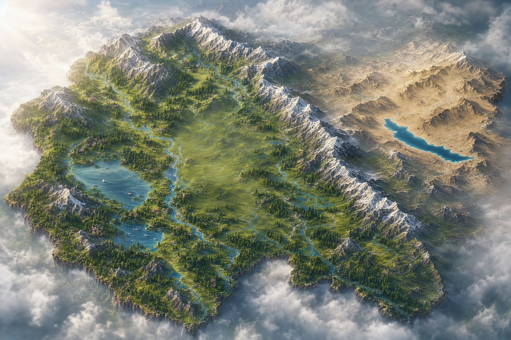

Kashmir
Gulmarg
Powder slopes, gondola views and summer meadows beneath Apharwat Peak.
Wal Pakh Destinations
16 journeys to explore
Powder slopes, gondola views and summer meadows beneath Apharwat Peak.

A gentle escape of pine forests, river walks and the wide Lidder Valley.

The Meadow of Gold, where glacier trails and the Sindh River begin.

Houseboats, shikara rides, gardens and the living rhythm of the old city.

Emerald grazing slopes, forest paths and the clear Doodh Ganga stream.

A quiet high valley of river villages, wooden homes and vast mountain views.

A slow, pine-scented retreat with meadows, streams and open skies.

Wide freshwater horizons, birdlife and a calmer side of the Kashmir valley.

A Mughal garden gathered around the clear spring regarded as the Jhelum's source.

A thoughtful pilgrimage journey through the foothills of the Trikuta Mountains.

Cedar forests, cool mountain air and a gentle pause along Jammu's hill routes.

A green valley made for mountain drives, village stays and meadow walks.

The City of Temples, regional cuisine and an easy gateway into the hills.
Monasteries, high-desert light and a base for some of the Himalaya's great roads.

A high-altitude blue lake whose colour and scale stay with you long after the drive.
No journeys match that filter yet.